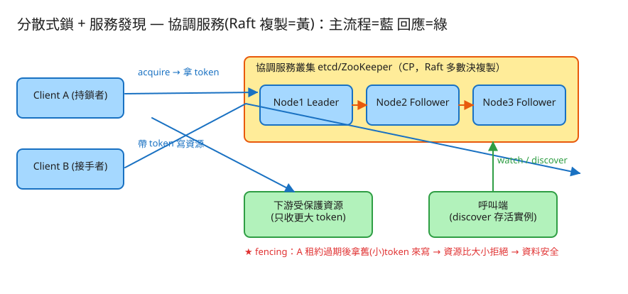

㊱ 分散式鎖 + 服務發現 · 初學者友善版
K 分散式系統
看故事就懂
輕鬆讀 25 分鐘
🧠 這份怎麼讀？
這份用「大腦比較好吸收」的方式重寫：先講生活比喻 → 把系統拆成小關卡 → 邊讀邊考自己。
分成兩部分：Part 1 概念（這東西在解決什麼麻煩）、Part 2 工程細節（怎麼真的蓋出來，一樣白話）。
遇到 💭 停一下 就先自己想 3 秒再往下看——這叫「提取練習」，比一直往下滑記得更牢。
1. 60 秒搞懂它在幹嘛
想像一間辦公室只有一間廁所，門上只有一把鑰匙。規則很簡單：誰拿到鑰匙誰才能進去，一次只能一個人。
別人想進？只能等鑰匙還回來。
當你的系統從「一台電腦」長成「好幾百台電腦」，常常會遇到同樣的麻煩：很多台機器同時想動「同一份東西」
（同一筆訂單、同一個檔案、同一個排程任務）。如果大家亂搶著動，資料就會壞掉。所以需要一把大家都認的鑰匙，
保證「同一時刻只有一個人在動」。這把鑰匙，就叫分散式鎖。
而要讓這把鑰匙「大家都認」，背後得有一個超級可靠、不會說謊的管理員來保管鑰匙、記錄誰借走了。
這個管理員順便還做幾件相關的事（誰活著、設定放哪），合起來就是這題的主角：協調服務（像 etcd、ZooKeeper）。
🔑 一句話
分散式鎖 = 很多台機器共用的「廁所鑰匙」：一次只給一個人，保證大家不會撞在一起動同一份資料。
協調服務 = 保管這把鑰匙、而且「絕不發錯」的超可靠管理員。
2. 為什麼「上鎖」這件事，在很多台機器之間突然變超難？
在同一台電腦裡，上鎖超簡單——程式裡寫一行 synchronized 就好，因為所有人都看著同一塊記憶體，誰拿了鎖一目了然。
但機器一多就麻煩了，原因是三個你生活裡也碰過的狀況：
😵 麻煩一：人會「突然失聯」
借了鑰匙的人，可能突然當機、突然斷網，鑰匙沒還就人間蒸發。難道大家就永遠進不了廁所？（這叫「持有者掛掉，鎖卡死」。）
😵 麻煩二：人會「以為自己還拿著」
有人借了鑰匙，中途恍神放空了好幾秒（程式被卡住、被系統暫停），等他回神，鑰匙其實早就被收回、給別人了，
但他自己不知道，還以為廁所是他的——這是這題最關鍵的坑。
😵 麻煩三：每台機器的「時鐘」不一樣準
不同機器的時間會有誤差、會跳，所以你不能完全靠「時間」來判斷誰該拿鑰匙。
所以這題真正考的，不是「怎麼上鎖」（太簡單），而是：當有人失聯、有人恍神、時鐘還不準的時候，這把鎖怎麼還能「絕對安全」？
💭 停一下：如果鑰匙是「永久的」（借了不還就一直鎖著），上面哪個麻煩會直接讓系統卡死？
看答案
麻煩一。借鑰匙的人一當機，鑰匙永遠收不回來，廁所就永遠鎖死，沒人能再進去。所以分散式鎖絕對不能用「永久鎖」——這就是下一節「借鑰匙要設時限」的由來。
3. 把它拆成 4 個關卡
別被「分散式鎖」嚇到。整件事就是闖 4 關，一關比一關關鍵：
1借鑰匙：一次只給一個人
機器要動共用資源前，先跟管理員（協調服務）借鑰匙（acquire 鎖）。管理員確保同一時刻只發給一個人，
其他人只能等。事情做完，記得還鑰匙（release），下一個才進得去。
🚻 比喻就是辦公室那把唯一的廁所鑰匙：拿到的人進去，其他人在門口排隊等。
2借鑰匙要設「時限」（租約 / lease）
為了避免「麻煩一：人失聯、鑰匙卡死」，管理員不會把鑰匙永久借出，而是給一個時限（例如 10 秒）。
這叫租約（lease）。
- 你還在用？就要定時回報「我還在用」（叫 續租 / 心跳），時限就會延長。
- 你沒回報了（當機、斷網）？時限一到，管理員自動把鑰匙收回，讓別人能用。
📚 比喻：圖書館借書
書借了有還書期限。你想繼續看就去續借；你都不理它，到期系統就當你不要了，自動收回給別人。鑰匙也一樣，到期自動回收，不怕被人拿了卡住不還。
3⭐ 防護令牌（fencing token）：擋掉「以為自己還拿著鑰匙」的人
這關是整題最重要的考點，請慢慢讀。它要解的，就是「麻煩二：人恍神，鑰匙早被收走他卻不知道」。
🎫 比喻：每次借鑰匙都給一個「遞增號碼」
管理員每次借出鑰匙，都附一張號碼牌，而且號碼只會越來越大：第一個人 33 號、下一個人 34 號……
這張號碼牌就是防護令牌（fencing token）。
接著最妙的地方：廁所門口（也就是你真正要動的那份資源）會記住「我見過的最大號碼」。每次有人要進來動東西，都得亮出號碼牌：
- 33 號的人恍神太久，鑰匙過期被收回，34 號的人已經進去動過了 → 門口記住的最大號碼變成 34。
- 33 號的人這時才回神，以為自己還握著鑰匙，拿著 33 號跑來要動東西。
- 門口一看：「你 33 號 < 我見過的 34 號，你的太舊了」→ 直接擋掉，資料不會被他覆蓋弄壞。
為什麼這招這麼神
因為門口不用相信時鐘、不用知道誰借了鑰匙、不用管別人有沒有恍神——它只要比大小就好：號碼比較舊的一律拒絕。
只要號碼是「只增不減」的，過期的人就永遠追不上，安全有保障。
👉 面試時這是分水嶺：如果這把鎖是要保證「正確性」（兩個人同時動會弄壞資料），光有鎖不夠，一定要講防護令牌，不然會被當場刷掉。
4順便附贈：服務發現（誰還活著的「線上通訊錄」）
既然已經有一個「超可靠管理員」會記錄「誰借了鑰匙、誰還在回報心跳」，那它順手就能多做兩件事：
- 服務發現：每台機器上線就來登記「我活著，地址在這」，並定時回報心跳；不回報就自動下架。
別的機器要找人合作，就來查這份「線上通訊錄」，只會拿到還活著的名單。
- 設定中心：把大家共用的開關和參數（例如限流數字）放這裡集中管，一改，所有機器馬上收到通知。
💬 比喻：公司的「線上通訊錄」
就像通訊軟體上的線上狀態：誰在線（綠燈）、誰離線（灰掉）一目了然。
你要找人辦事，只會去敲還亮綠燈的人，不會打給已經離職的。
✅ 四關一句話
① 借鑰匙（一次一人）→ ② 借鑰匙有時限（到期自動收回，不怕卡死）→ ③ 每次借都給遞增號碼，門口靠比大小擋掉過期的人（最重要）→ ④ 同個管理員順便維護誰還活著的通訊錄。
4. 設計時最怕的 3 件事
工程上的「取捨」聽起來很抽象。換個方式記：這個系統最怕三件事，每個設計都是為了避開某個「怕」。
😱 怕「兩個人同時以為自己拿到鑰匙」
這是最致命的——一旦兩個人同時動同一份資料，資料就壞了。所以「安全（絕不發錯鑰匙）」是底線中的底線，
而最後一道保命符就是防護令牌（門口比號碼，舊的擋掉）。寧可慢，不可發錯。
😱 怕「鑰匙被卡死收不回」
借鑰匙的人當機失聯，鑰匙若收不回，整個系統就卡住。所以鑰匙一律有時限（租約），
到期就自動回收。代價是「人只是恍神一下也可能被收鑰匙」——但這正好由防護令牌補上，安全不破。寧可早收回，不可卡死。
😱 怕「管理員自己掛掉」
這個管理員是全系統的「真相來源」，它一掛，大家都借不到鑰匙。所以管理員不會只有一個，
而是用奇數個（3 個或 5 個）一起當，凡事多數同意才算數（少數服從多數）。
掛掉 1 個還有另外 2 個能繼續服務。真相只能有一個，但備援要夠多。
5. 一張圖看懂

✏️ 用 Excalidraw 開啟編輯（diagram.excalidraw）
白話導讀：
- 🏛️ 中間那一排（3 個節點）就是超可靠管理員（協調服務）。它們互相對答案，多數同意才算數，所以「不會說謊」。
- 🔑 機器 A 來借鑰匙，拿到鑰匙＋一張號碼牌（fencing token）。
- 🚪 機器 A 拿著號碼牌去動下游資源（廁所門口）；門口只認大號碼，小號碼一律擋。
- 👀 其他機器可以盯著（watch）鑰匙，一旦鑰匙被放掉，馬上收到通知去搶。
- 📒 旁邊的呼叫端來查「線上通訊錄」，拿到的都是還活著的機器名單。
6. 名詞白話翻譯
看完上面，這些詞你其實都已經懂了，這裡只是把「工程術語 ↔ 白話」對起來，Part 2 會用到：
| 工程術語 | 白話解釋 |
|---|
| 分散式鎖 | 很多台機器共用的「廁所鑰匙」，一次只給一人 |
| 協調服務 (etcd/ZooKeeper) | 保管鑰匙、絕不發錯的「超可靠管理員」 |
| 租約 (lease) | 借鑰匙的「時限」：到期沒續借就自動收回 |
| 續租 / 心跳 (renew) | 定時喊「我還在用！」，鑰匙時限就延長 |
| fencing token（防護令牌） | 每次借鑰匙附的「遞增號碼牌」，門口靠比大小擋掉過期的人 |
| 選主 (leader election) | 一群機器選一個「組長」做主，組長掛了自動換人 |
| 服務發現 (service discovery) | 「誰還活著」的線上通訊錄 |
| 設定中心 (config) | 共用開關/參數集中放一處，一改全體收到 |
| watch（監看） | 盯著某個東西，一變化就立刻被通知（不用一直問） |
| 強一致 / CP | 寧可暫停服務，也絕不發出互相矛盾的答案 |
| 多數決 (quorum) | 奇數個管理員，「過半同意」才算數 |
| 安全性 vs 活性 | 「絕不發錯鑰匙」(安全) 比「隨時都借得到」(活性) 重要 |
🛠️ Part 2 ｜ 工程細節（一樣白話）
概念懂了，來看「真的要動手蓋，得想清楚哪些事」。一樣用比喻，不用怕。
7. 要準備多大？（規模估算）
🍱 比喻：先估規模才知道準備多少料
這管理員要罩多少機器、每秒處理幾次借還鑰匙、要存多大？先把這幾個數字的「形狀」抓出來。
| 估什麼 | 大概數字 | 所以呢？ |
|---|
| 要幾個管理員 | 3 個（容忍掛 1 個）；要更穩就 5 個（容忍掛 2 個） | 一定是奇數，才好「過半投票」 |
| 每秒能處理幾次借/還鑰匙 | 約一萬～數萬次（受「要過半確認＋寫進硬碟」拖累） | 它不是無限快，別把它當高速資料庫操 |
| 能放多大的資料 | 每筆建議 < 1KB，整庫上限約幾 GB | 它只放關鍵的小紙條，不是拿來存大檔案的 |
| 鑰匙時限 (TTL) 設多久 | 常見 5～30 秒 | 太短→風吹草動就誤判掉線；太長→真掛了要等很久才收回 |
🎯 關鍵洞察：它不是資料庫
這管理員的價值在「少量、超關鍵、絕不出錯的小紙條」（誰拿了鑰匙、誰活著、哪個開關開著），不是拿來存大量資料的。
把它當資料庫塞，是最常見的災難。
💭 停一下：為什麼鑰匙時限（TTL）「越短越好」其實是錯的？
看答案
時限太短，網路只要稍微抖一下、心跳慢了一拍，管理員就誤以為你掛了、把鑰匙收走，造成頻繁誤判、一直換人，而且大家要更密集地回報心跳，壓力變大。所以要在「快點發現真的掛掉」和「不要動不動誤判」之間取平衡，常見抓 5～30 秒。8. 系統之間怎麼溝通？（API）
🍔 比喻：點餐單
API 就是兩個系統講好的「點餐單格式」：你要點什麼、我回你什麼。講好格式就能合作，不用知道對方內部怎麼運作。
這題的「點餐單」其實就對應前面四關：
① 借/還/續 鑰匙（鎖）
借： lock { 哪把鎖, 我是誰, 時限 } → 回你：{ 號碼牌(token), 何時到期 }
還： unlock { 哪把鎖, 我是誰 }
續： renew { 哪把鎖, 我是誰, 時限 } ← 心跳，喊「我還在用」
注意借鑰匙回給你的不只是「成功」，還附一張號碼牌（token）——這就是第 3 關的防護令牌，等下動資源要用。
② 動下游資源時，一定要「亮出號碼牌」
寫資源/{id} 附上：號碼牌=42
（門口規則：只接受「比上次見過更大」的號碼，舊的擋掉）
這一行是整題的靈魂：資源端靠「比號碼大小」自保，不用相信時鐘、不用知道鎖的存在。
③ 選組長 / 看誰是組長
campaign { 哪場選舉, 候選人, 時限 } → { 你是不是組長, 現任組長 }
④ 服務發現 + 設定中心
register { 服務名, 實例, 地址, 時限 } ← 上線登記＋要續租
discover?service=付款服務 → 回：還活著的實例清單
設定： put { 開關名, 值 } / watch 開關名 ← 一改就被通知
9. 系統要記住哪些事？（資料模型）
📒 比喻：管理員桌上的幾本小冊子
管理員要把事情記在「小冊子」（資料表）裡。重點是這幾本：
🔑鑰匙簿（誰借了哪把鎖、號碼幾號）
每把鎖一列：哪把鎖 → { 誰借的, 何時到期, 號碼牌(token) }。
這個號碼牌來自一個「只會往上加的計數器」，每成功借出一次就 +1——所以號碼永遠不重複、永遠遞增，才能拿來比大小。
🚪門口簿（每份資源見過的最大號碼）
每份下游資源各自記一筆：這份資源 → 見過的最大號碼。
有人來動，就拿他的號碼跟這個比：比這個小，一律拒絕。這就是防護令牌能保命的關鍵——擋掉所有「過期還來亂」的人。
📒名冊簿（誰還活著）
每個服務記：服務名 → { 各實例的地址, 綁的租約 }。
這些登記是「綁租約的」：實例不續租（心跳停）→ 租約一死，名單自動消失，查到的永遠是活著的。
10. 哪裡會塞車、怎麼拓寬？（擴展）
🚗 比喻：找出塞車路段，拓寬它
系統變大時，總有某個環節先「塞車」。工程師的工作就是找出最會塞的地方，把它拓寬。一個個看：
| 哪裡會塞車 | 怎麼拓寬 |
|---|
| 借/還鑰匙寫不夠快（每筆都要過半確認＋寫硬碟） | 別把它當資料庫；只放關鍵小紙條；把它切成多個獨立叢集分擔 |
| 盯太多人：一個熱門開關一改，要通知好幾萬個監看者 | 通知批次合併、加一層代理幫忙轉發 |
| 驚群：組長一掉線，所有人同時搶鑰匙、擠成一團 | 讓大家排隊：每人只盯「排在自己前一位」的人，前面的放手才換你（不用全體擠） |
| 太多機器一直反覆查通訊錄/設定 | 讓副本提供唯讀查詢，加上機器自己快取＋一變化才更新 |
| 幾十萬實例各自一個短時限的心跳，太吵 | 多個實例共用一個租約、把時限拉長一點 |
11. 還有哪些「魚與熊掌」？（取捨）
「Part 1 的三個怕」是核心取捨。這裡補幾個常被面試官追問的：
⚖️ 這把鎖是為了「效率」還是「正確性」？（面試開場必問）
為了效率（偶爾兩人重複做只是浪費時間）→ 普通鎖就夠；為了正確性（兩人同動會壞資料）→ 非加防護令牌不可，少了它直接出局。
⚖️ 拿不到鎖時，要「一直猛問」還是「盯著等通知」？
一直猛問（自旋輪詢）既浪費又會擠成一團。正解是盯著（watch），等前一位放手時被自動叫醒，比較省力也不會驚群。
⚖️ 用普通 Redis 做鎖行不行？（必知爭議）
純 Redis 那套（Redlock）在「人恍神＋時鐘亂跳」時仍可能讓兩人同時持鎖，而且它不發號碼牌。
要正確性，請用 etcd/ZooKeeper（強一致）＋防護令牌；Redis 鎖只適合「效率型」場景。
💭 追問：管理員自己全掛了怎麼辦？
用奇數個（3/5）多數決容錯，掛少數還能撐。萬一真的整組掛了，正確做法是「借不到鑰匙就停手」（fail-safe），不要沒鎖還硬幹——硬幹才會壞資料。💭 追問：那不如直接用資料庫的「鎖定這筆資料」就好？
可以，但少了「到期自動收回」和「一變化就通知」這兩個好用功能，而且會把協調壓力全壓在主資料庫上。所以才有專門的協調服務。12. 動手玩玩看
讀十遍不如玩一遍。這題有一個真的可以跑的小程式，把六種協調能力都做成可點按的按鈕，尤其能親眼看到「舊號碼牌被擋掉」：
# 啟動（在這題的 demo 資料夾裡）
cd demo
php -S localhost:8036 -t public
# 然後瀏覽器打開 http://localhost:8036
- 先借一把鎖，記下它給你的號碼牌（例如 1）。
- 用這個號碼牌去寫資源 → 成功（門口記住最大號碼 = 1）。
- 再借一次同一把鎖，拿到新號碼牌（2），也寫一次資源（門口最大號碼變 2）。
- 現在故意拿舊的號碼牌 1 去寫資源 → 觀察它被拒絕。這就是 fencing 在保命！
玩的時候想一下那張「被拒絕」的畫面，正是真實世界裡恍神醒來的人想覆蓋別人寫入的瞬間——門口靠比號碼大小，幫你把資料守住了。
誠實聲明
這個 demo 是單機模擬：用一個狀態檔＋檔案鎖，模擬「一個被複製、絕不說謊的管理員」，沒有真正的多台節點投票。
但租約、防護令牌、watch、選主、服務發現的邏輯都是真的、可實際執行，特別是「舊號碼牌被擋」這個最重要的考點。要變成真叢集，把底層換成 etcd/ZooKeeper 即可，上層玩法不變。
13. 考考自己
先不要看答案，自己用講給朋友聽的方式回答看看（講得出來才是真的懂）：
Q1：用「廁所鑰匙」解釋什麼是分散式鎖。
辦公室只有一間廁所、一把鑰匙，誰拿到誰才能進、一次一人，別人排隊等。很多台機器要動同一份資料時也一樣，需要一把大家都認的「鑰匙」保證同時只有一個人在動，避免資料撞壞。Q2：為什麼借鑰匙一定要設「時限」（租約）？
因為借鑰匙的人可能突然當機、斷網，鑰匙若是永久的就永遠收不回、廁所卡死。設時限後，沒續借就自動收回，別人能接手。像圖書館借書到期自動還。Q3（最重要）：什麼是防護令牌？它解決什麼問題？用「號碼牌」說說看。
每次借鑰匙都附一張只增不減的號碼牌。它解決「有人恍神太久、鑰匙早被收走給別人、他卻以為自己還拿著」的危險：門口記住見過的最大號碼，那個恍神的人拿舊號碼來寫，門口一比「你的太舊」就擋掉，資料不會被覆蓋壞。靠比大小就安全，不用信時鐘。Q4：服務發現像什麼？它怎麼知道誰「下線」了？
像通訊軟體的線上狀態（綠燈/灰掉）——一份「誰還活著」的通訊錄。每台機器上線登記並定時回報心跳；心跳一停，綁的租約死掉，名單自動移除，查到的永遠是活著的。Q5：為什麼管理員要用「奇數個」？
因為要靠「過半同意」才算數（少數服從多數），奇數才不會出現剛好一半對一半、僵住分不出勝負的情況。3 個能容忍掛 1 個，5 個能容忍掛 2 個。Q6（工程）：為什麼說「不能把協調服務當資料庫用」？
因為它每筆寫都要「過半確認＋寫進硬碟」，速度有限（每秒一萬～數萬），整庫容量也小（幾 GB）。它的價值是「少量、超關鍵、絕不出錯的小紙條」，塞大量資料進去會把它拖垮。Q7（工程）：拿不到鎖時，為什麼不要「一直猛問有沒有空」？該怎麼做？
一直猛問（自旋輪詢）浪費資源，而且大家同時搶會擠成一團（驚群）。正解是「盯著（watch）」前一位，等他放手時被自動叫醒；甚至排成一隊，每人只盯前一位，輪到才動。14. 30 秒回顧
分散式鎖 = 很多台機器共用的「廁所鑰匙」，一次只給一個人；協調服務 = 那個絕不發錯的超可靠管理員。
4 個關卡：① 借鑰匙（一次一人）→ ② 借鑰匙有時限（到期自動收回，不怕卡死）→ ③ 每次借附遞增號碼牌，門口比大小擋掉過期的人（最重要） → ④ 同個管理員順便維護「誰還活著」的通訊錄。
3 個怕：怕兩人同時以為拿到鑰匙（靠防護令牌保命）、怕鑰匙卡死收不回（靠租約到期自動收）、怕管理員自己掛（靠奇數個多數決）。
工程細節一句話：它不是資料庫（只放關鍵小紙條）→ 借鑰匙會回一張號碼牌、動資源要亮號碼牌 → 幾本小冊子（鑰匙簿/門口簿/名冊簿）→ 找出塞車環節各自拓寬，正確性場景非加防護令牌不可。
想看更精簡、面試速查用的版本？👉 前往完整版（同樣內容的工程速查格式）。